AtlasLC：面向对象中心 3DGS 的快速 codec-ready 压缩AtlasLC: Fast Codec-Ready Compression of Object-Centric 3D Gaussian Splatting
部署指标明确且不需源数据，对 XR/边缘 3DGS 资产实用；研究对象是语义集中的前景物体，不可直接外推到大规模在线地图。
一句话工作总结
无需原图或再训练，联合局部竞争裁剪和确定性 atlas packing，将对象 3DGS 资产准备最多加速 25×。
摘要
AtlasLC 是 source-free、training-free 的对象中心 3DGS 压缩流水线，可直接处理已发布 Gaussian assets，不需原始图像、相机位姿或逐资产优化。方法组合 local-competition pruning 与 deterministic atlas packing，在保留对象前景支持的同时消除 mapping/remapping 瓶颈，并使用轻量单遍 sort-based conditional transport 作为共享坐标骨架。实验中 atlas preparation 最多加速 25×、端到端压缩最多 5×；相对同等紧凑的结构化基线，bits 减少约 6–8%，感知与几何质量相当。
3D Gaussian Splatting (3DGS) enables photorealistic novel-view synthesis with real-time rendering, but deploying compressed object-centric 3DGS in XR requires more than image-space rate-distortion. In practical XR asset pipelines, reusable objects are repeatedly packaged, transmitted, decoded, and instantiated, making asset-preparation cost, codec compatibility, decoding latency, and preservation of depth and silhouette cues first-class concerns. Existing 3DGS compression methods are largely developed for scene-scale captures and often rely on heavy layout generation or aggressive global pruning, assumptions that transfer poorly to semantically concentrated foreground objects. We present AtlasLC, a source-free, training-free compression pipeline for object-centric 3DGS that operates directly on released Gaussian assets, without original images, camera poses, or per-asset optimization. AtlasLC couples local-competition pruning with deterministic atlas packing to remove the mapping/remapping bottleneck while preserving object-wide foreground support; a lightweight single-pass sort-based conditional transport is used as a shared coordinate backbone for these stages. Across the evaluated assets, AtlasLC reduces atlas-preparation time by up to a factor of 25 and end-to-end compression time by up to a factor of 5, while offering a favorable deployment-aware balance of payload, decode latency, runtime FPS, and 3D geometry relative to the evaluated compressed baselines. Relative to similarly compact structured baselines, it uses about 6 to 8 percent fewer bits while maintaining comparable perceptual and geometric quality. These results show that object-centric 3DGS compression should be optimized for a deployment-aware operating point enabling scalable XR asset libraries.
中文解读摘录
- 作者：ByungHyun Kim, Jinwoo Jeon, Woontack Woo
- 价值判断：直接处理已发布 Gaussian asset，不需原图、相机位姿或逐资产优化；local-competition pruning 与 deterministic atlas packing 针对 XR 资产流水线中的准备、解码和实例化成本。
- 结果与边界：atlas preparation 最多加速 25×、端到端压缩最多 5×；相近紧凑基线下少用约 6–8% bits，同时维持相当感知和几何质量。适用对象资产而非大场景在线地图，需看复杂背景、细薄结构和 codec 实际兼容性。
- 链接：arXiv · PDF
图表/页面预览
{kind=link}
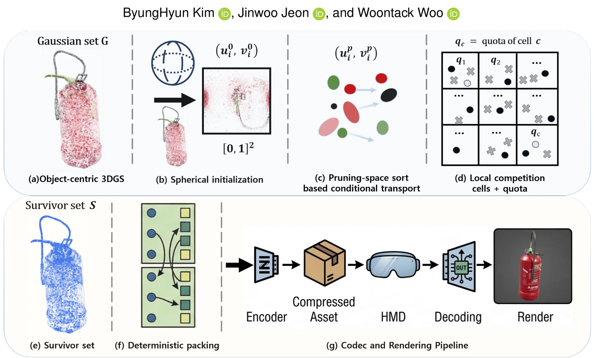
{kind=link}
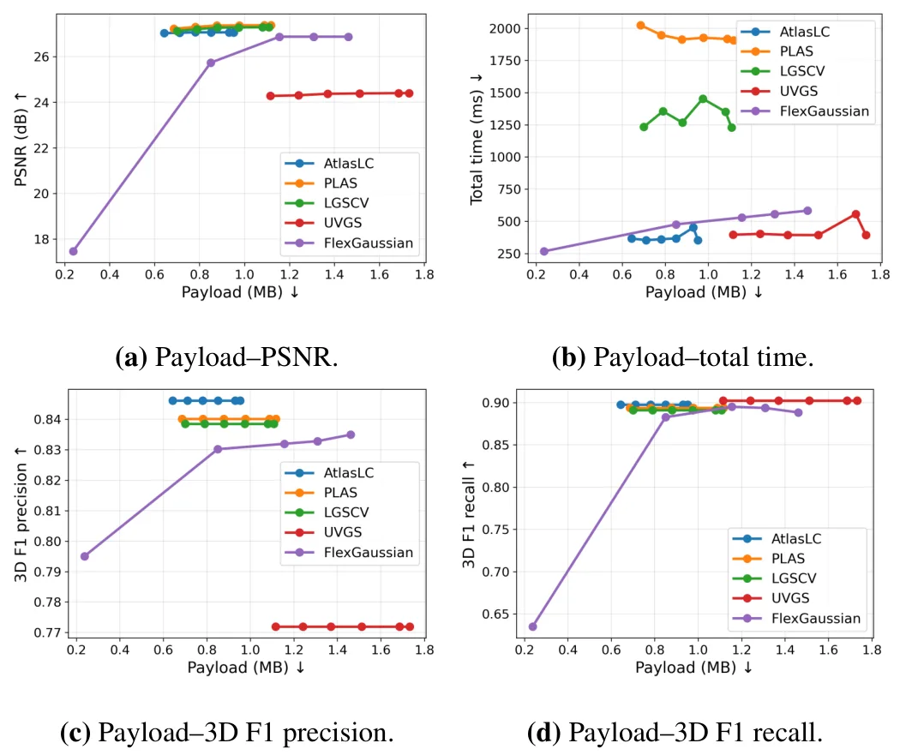
{kind=link}
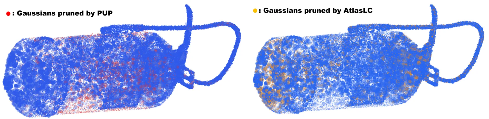
{kind=link}
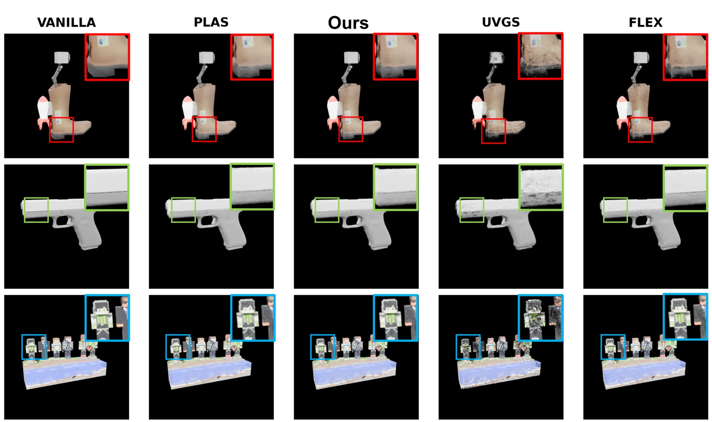
{kind=link}
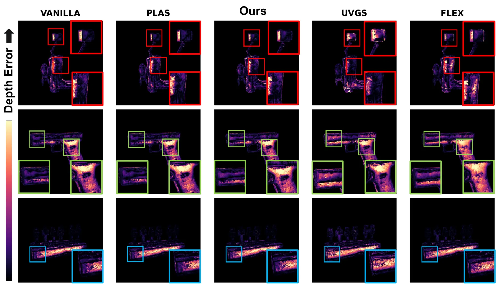
{kind=link}
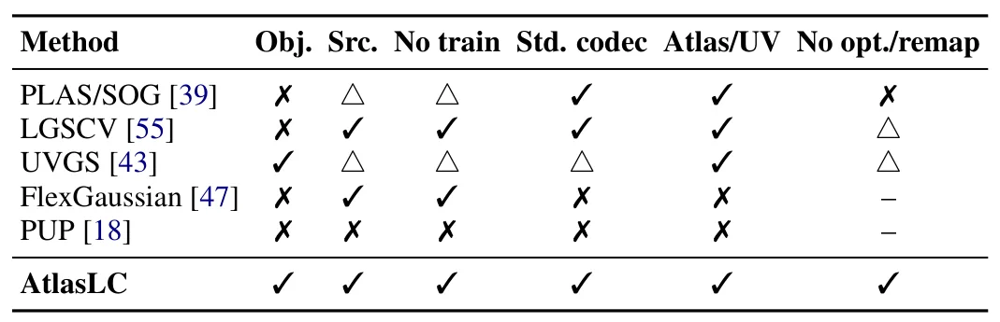
{kind=link}
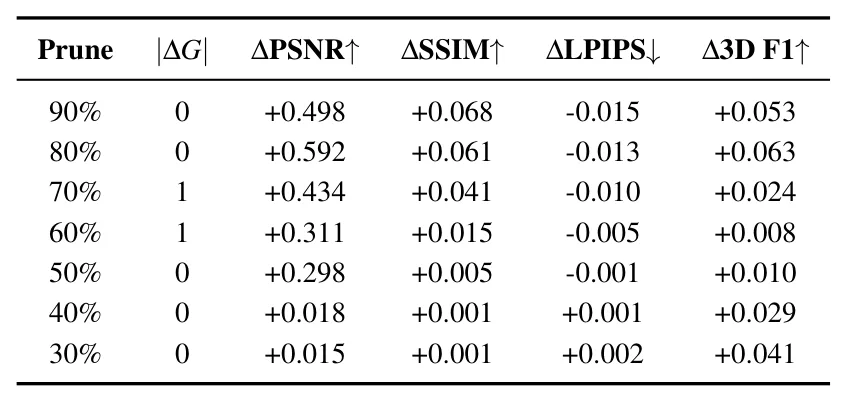
{kind=link}
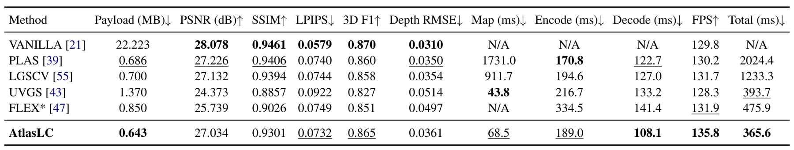
{kind=link}
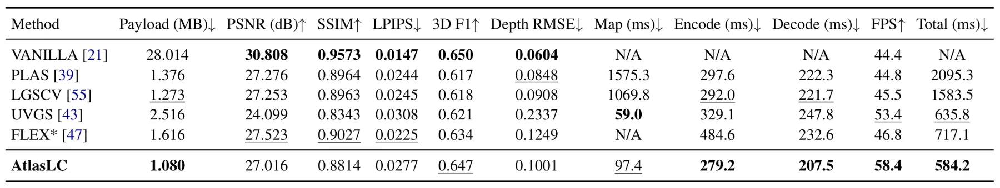
{kind=link}
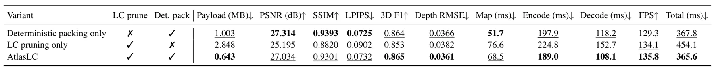
{kind=link}
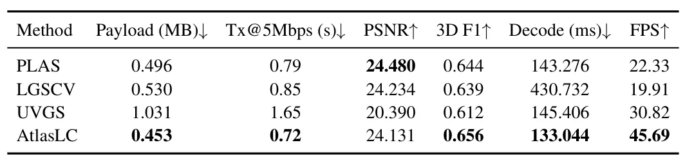